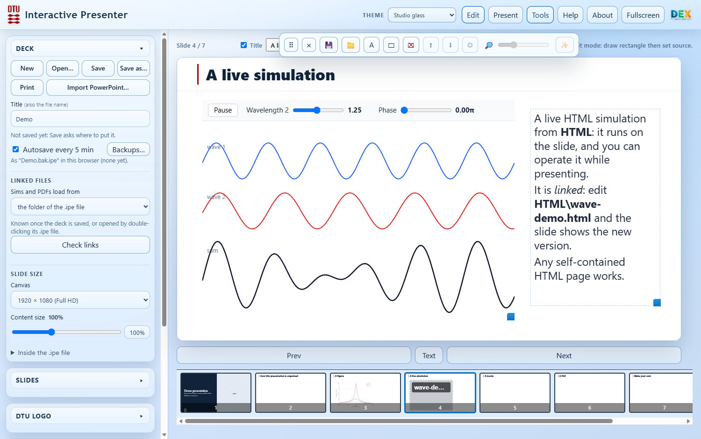

Interactive Presenter
Slides with live content on them: HTML simulations you operate during the talk, movies, PDFs and pictures, placed in boxes on your slides. It runs in Chrome or Edge, entirely offline, and a presentation is one file you can copy anywhere.

Interactive Presenter is made for teaching and for talks where you want to show, not just tell: change a parameter in a simulation while the audience watches, play a movie, scroll through a paper. Your slides can be pictures (for example exported from PowerPoint), or PowerPoint files imported with their text and pictures still editable. On top of them go movable boxes with the live content.
This is a test version, shared as it is for trying out. Questions and suggestions are welcome at pbog@dtu.dk.
Try it in the browser
Opens the demo presentation straight away: a title page with a live simulation, a figure, a movie and a PDF. Press Present (or F5) to present, the arrow keys to move on and Esc to go back to editing. Nothing is uploaded; it all runs in your browser.
Open the demo Start emptyIn the browser, Browse… (choosing a folder) and Import PowerPoint… are not available: they need the Windows version.
Download for Windows
The full version: the app, a Demo folder to start from, and an installer that makes .ipe files open on double-click, adds a desktop icon and enables PowerPoint import (needs PowerPoint) and the folder dialog. About 4 MB.
Download (zip)- Unzip it somewhere it can stay, for example in Documents.
- Double-click Install Interactive Presenter.cmd (no administrator rights needed). If Windows warns about an unrecognised app: More info → Run anyway.
- Double-click Demo\Demo.ipe, and read README.txt.
Needs Google Chrome or Microsoft Edge. The first time you use Browse… or Import PowerPoint…, the browser asks to open the Interactive Presenter helper: allow it.
A presentation folder
The Demo shows the layout that keeps a presentation portable. Pictures, movies and PDFs are copied into the .ipe file when you add them; HTML simulations are linked and load live from the HTML folder next to it. Copy the whole folder and everything keeps working, on any PC.
My talk\ My talk.ipe the presentation (one file) HTML\ live simulations, linked from the slides Figures\ pictures PDF\ PDFs Movies\ movies
What is in it
- Live content on slides — HTML simulations, movies, PDFs (scroll and zoom while presenting), pictures, image sequences and rich text, in boxes you draw, move and resize. They keep their place on any screen.
- Slides — slide pictures, PowerPoint import (Windows with PowerPoint), title pages, section dividers with a progress bar, summary slides and an automatic table of contents.
- Builds — animation steps: boxes and single paragraphs appear and disappear on a click.
- Credits — portraits and names of the people behind the work, and acknowledgements.
- Safe by default — Save writes one .ipe file; autosave keeps a backup in the browser every 5 minutes.
About
Interactive Presenter is made by Peter Bøggild at 2DPHYS, Department of Physics, Technical University of Denmark (DTU), for teaching and for talks with live simulations.